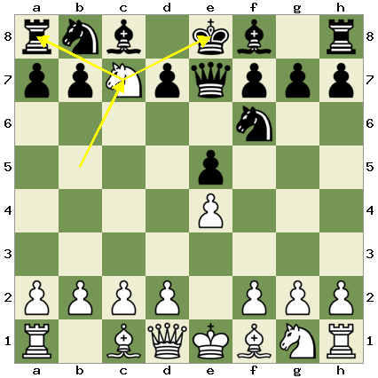
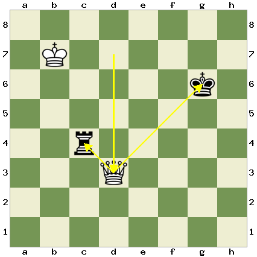
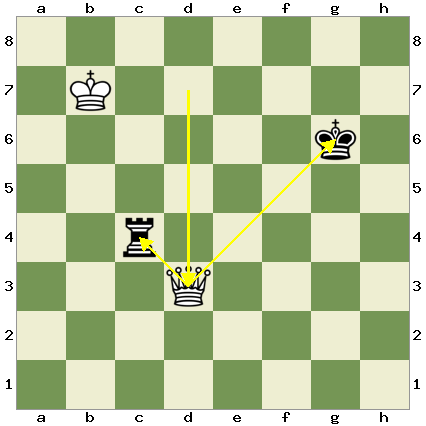

Midgame
This section will focus on the midgame section of a chess game. In chess the midgame is the majority of the gameplay, and comes after the initial opening, usualy starting after both sides castle. This section will teach various tactics and things to watch out for in the midgame to help you get ahead of your opponents.
Table of Contents
- Forks- Rook Traps
Forks
In chess, a fork is when one player's piece attacks two or more of their opponent's pieces at the same time. In this situation the opponent is only able to move one of their pieces out of danger, and you are able to capture the other. A fork can be accomplished using any piece besides the king, an example of a fork with each piece is below.
 

The most common piece a fork is accomplished with is a knight, due to it's L shaped movements. An example of a common situation in which a fork is done is shown below. We can see that the opponent has moved their queen out of the way, which leaves the pawn on the C file vulnerable to our knight.
When we take that pawn we are now attacking both their rook and their king, putting them in check. They have to move their king out of harms way which allows us to take their rook in the corner.
It is important to try to get into this position in a chess game, as well as watch out for your opponent trying to do the same to you. Another example, this time a puzzle for you to figure out, is shown below.
Rook Traps
Another common situation is shown here. During the opening we fianchettoed our bishop, as mentioned in the section on oppenings, wbich puts it on the long diagnol line of our board. Our opponent then develops their bishop, moving it out of the way. However this takes away the defense on their B pawn, leaving it vulnerable to our bishop.
This allows us to capture this B pawn, which means our bishop is now attacking our enemies rook.
Since this rook is in the corner and is boxed in by the pawn in front and the night beside it, it is effectivley trapped. The enemy has no way to defend their trapped rook, meaning no matter what they do on their next move, we will be able to capture it
Due to the long ranged nature of this attack, it can often be difficult to see coming. This is part of the reason fiancettoed bishops are so powerful, they provide this constant threat to the rook, and mean that the opponent has to take special care not to move their B pawn or leave it undefended. However this threat goes both ways, and it is always important to be on the lookout for this tactic if your opponent has their bishop out.
Coded By: Finn Cullen 2023